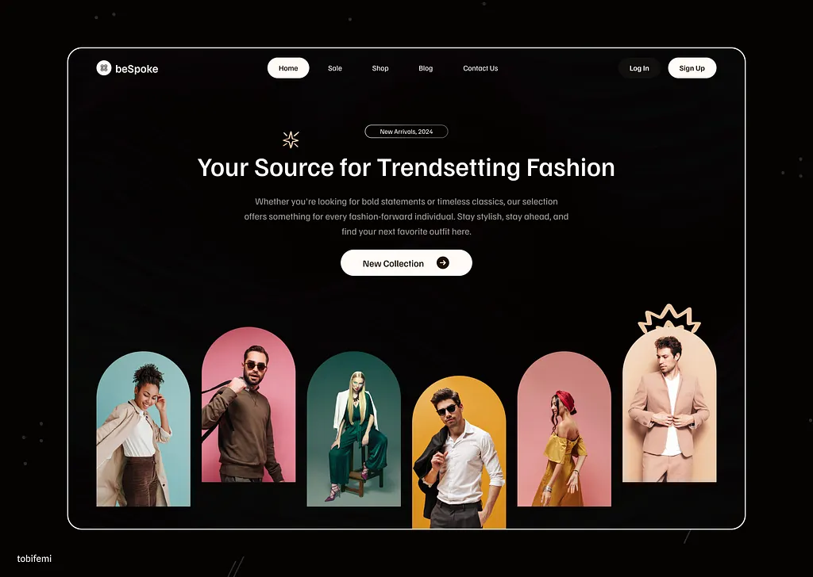

Proyectos
Trabajo Destacado
Presentación de algunos de mis mejores proyectos y logros alcanzados.
Desarrollo aplicaciones web y móviles modernas, escalables y funcionales.
Soy estudiante de Ingeniería en Sistemas Computacionales con enfoque en desarrollo Full Stack. Me especializo en crear aplicaciones web y móviles combinando interfaces modernas con lógica backend eficiente. Me interesa seguir creciendo profesionalmente y participar en proyectos reales.

Un resumen de mi formación, proyectos clave y habilidades prácticas que he desarrollado a lo largo de mi crecimiento como desarrollador.
En desarrollo
En formación
He construido aplicaciones web completas para proyectos escolares y personales, incluyendo dashboards, sliders de departamentos, filtros avanzados, integración de APIs, React components, y sistemas interactivos. Me enfoco en crear interfaces limpias, funcionales y responsivas, conectadas con backends bien estructurados.
2022 – 2024
He desarrollado pequeños proyectos y colaboraciones que incluyen landing pages, optimización visual, animaciones ligeras, integración de menús, personalización de estilos y apoyo tanto en proyectos familiares como personales.
Presentación de algunos de mis mejores proyectos y logros alcanzados.